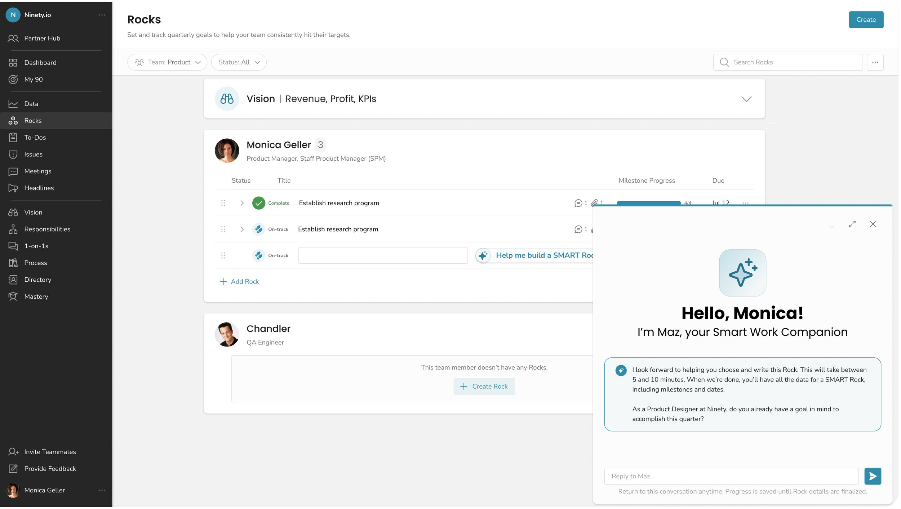
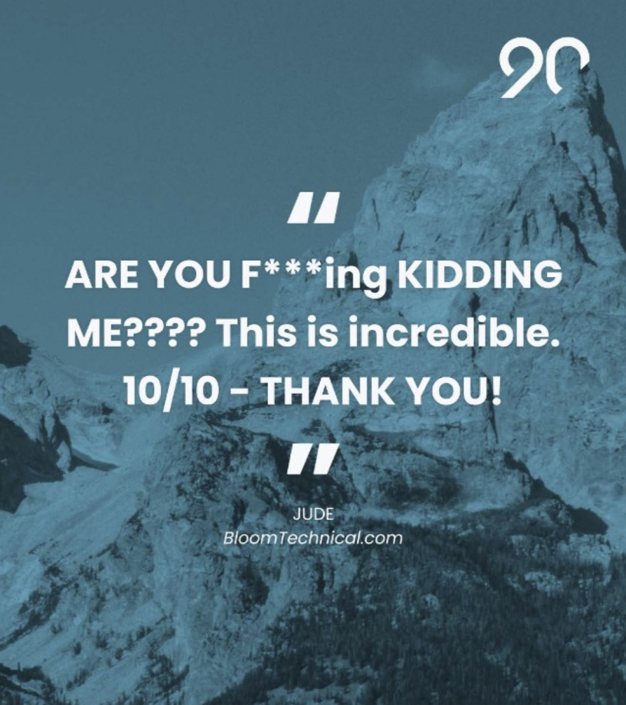

Overview
The hardest part of quarterly planning is starting
Ninety is built around the Entrepreneurial Operating System (EOS®) — a framework where leadership teams set quarterly priorities called “Rocks.” Rocks are supposed to be SMART: specific, measurable, actionable goals with clear milestones. In practice, they rarely started that way.
Users wrote vague Rock titles, forgot due dates, skipped milestones, and then leaned on their EOS implementers or coaches to fix them in the quarterly meeting. The feedback from coaches was consistent:
“It took a year before people consistently made SMART Rocks. Everyone pushed it off until the last minute.” — Client, confidential
The opportunity was to bring the coaching conversation into the product itself — letting Maz, Ninety’s AI agent, ask the same reflective questions a good EOS coach would ask, right at the moment of creation.
The Problem
A form captured the goal without helping define it.
The existing form asked for a title, due date, and milestones. It gave people a place to enter a goal, but little help deciding whether that goal was specific enough to work toward.
Research with users and EOS coaches exposed recurring gaps:
My Role
Lead Product Designer, discovery through ship
I led design for Draft Rocks with Maz end to end, partnering with the PM and engineering team throughout:
The Solution
Use the conversation to develop the draft.
I designed Maz to ask focused questions about success, measurement, and milestones, then use the answers to fill the Rock’s structured fields. People could develop the goal in conversation and review it before saving.
The interaction had to fit existing creation paths and remain optional:
Design Details
From blank form to guided conversation
The existing Rock creation entry point — an inline text input — needed to surface the option to use Maz without forcing it. I designed the affordance as a light touch: an AI assist option that appears alongside the existing inline add, so users who want to go straight to the form can, and users who want coaching can opt in.

Once in the coaching conversation, Maz works through the Rock structure progressively: first grounding the user in the goal, then specificity, then how to measure it, then breaking it into milestones. As responses come in, the structured fields auto-populate in the background — so when the conversation ends, the Rock is ready to save.

Outcomes
58% of AI-guided drafts reached a saved Rock.
The feature shipped as part of Maz’s broader launch. The reported completion rate was 58% for AI-guided drafts. That measures whether people finished the creation flow; it does not, on its own, establish the quality of their quarterly goals.
The reusable contribution was the interaction between conversation and structured input: preserve the draft, let people stop or resume, and keep the final save under their control. Those patterns could carry into other Maz creation experiences.
Reflection
Help people develop the goal they will own.
The important choice was the role Maz played. Asking someone to review a generated goal is different from helping them articulate their own. I chose the latter because the person setting the Rock still has to understand and carry out the commitment.
The opt-in entry point, preserved draft, stop control, and final review all supported that choice. They gave the user a way to ask for help without giving up the creation process.